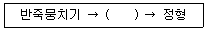

제빵기능사 (2003-07-20 기출문제)
1과목: 제조이론
1. 데블스 푸드 케이크(Devil`s Food Cake)에서 천연 코코아 사용량이 30%일 때 소다의 사용량은?
- 1.2%
- 2.1%
- 2.8%
- 5.2%
(정답률: 38%)

2. 케이크 도넛 반죽에 휴지를 주는 이유로 틀리는 것은?
- 이산화탄소 가스를 발생시킨다.
- 도넛 제품이 적절한 부리를 갖도록 한다.
- 생재료가 제품에 남지 않게 한다.
- 껍질형성을 빠르게 한다.
(정답률: 32%)
3. 스펀지 케이크 반죽을 할 때 더운 방법은 계란과 설탕을 몇 도로 만든 후 믹싱하는 것이 가장 좋은가?
- 27℃
- 43℃
- 57℃
- 63℃
(정답률: 70%)
4. 반죽의 비중과 관계가 가장 적은 것은?
- 제품의 부피
- 제품의 가공
- 제품의 조직
- 제품의 점도
(정답률: 34%)
5. 슈(choux)의 제조 공정상 구울 때 주의할 사항 중 잘못된 것은?
- 220℃정도의 오븐에서 바삭한 상태로 굽는다.
- 너무 빠른 껍질 형성을 막기 위해 처음에 윗불을 약하게 한다.
- 굽는 중간 오븐문을 자주 여닫아 수증기를 제거한다.
- 너무 빨리 오븐에서 꺼내면 찌그러지거나 주저 않기 쉽다.
(정답률: 79%)
6. 도넛을 글레이즈할 때 글레이즈의 적정한 품온은?
- 24-27℃
- 28-32℃
- 33-36℃
- 43-49℃
(정답률: 71%)
7. 다음 원료 중 초콜릿에 일반적으로 사용되는 원료가 아닌 것은?
- 카카오 버터
- 전지분유
- 이스트
- 레시틴
(정답률: 67%)
8. 케이크에서 설탕의 역할과 거리가 먼 것은?
- 감미를 준다.
- 껍질색을 진하게 한다.
- 수분 보유력이 노화가 지연된다.
- 제품의 형태를 유지시킨다.
(정답률: 59%)
9. 충전물 또는 젤리가 롤 케이크에 축축하게 스며드는 것을 막기 위해 조치해야 할 사항으로 틀린 것은?
- 적당한 굽기
- 물사용량 감소
- 반죽시간 증가
- 물엿 사용
(정답률: 49%)
10. 다음 과자반죽 중 저율배합의 특징인 것은?
- 감미가 높다.
- 팽창제 사용량이 많다.
- 수분 사용량이 많다.
- 식감이 부드럽다.
(정답률: 42%)
11. 다음 반죽형 제법 중 먼저 밀가루와 유지를 혼합하여 부드러움 또는 유연감을 목적으로 하는 제법으로 알맞은 것은?
- 크림법
- 1단계법
- 설탕/물법
- 블렌딩법
(정답률: 77%)
12. 다음 제품 중 나무틀을 이용하여 팬닝하는 제품으로 알맞은 것은?
- 슈
- 밀푀유
- 카스텔라
- 퍼프페이스트리
(정답률: 64%)
13. 제과용 기계 설비로 알맞지 않은 것은?
- 오븐
- 라운더
- 에어믹서
- 데포지터
(정답률: 54%)
14. 케이크 도넛의 성형방법이다. ( )에 들어갈 공정은?

- 반죽되기 조절하기
- 밀어펴기
- 튀기기
- 덧가루 첨가하기
(정답률: 76%)
15. 도넛의 튀김 기름이 갖추어야 할 조건 중 가장 옳은 것은?
- 냄새가 없어야 한다.
- 저장 중 안정성이 낮다.
- 발연점이 낮다.
- 산화와 가수분해가 쉽게 일어난다.
(정답률: 60%)
16. 반죽시 렛다운 단계(Let down stage)를 바르게 설명한 것은?
- 최종단계를 지나 반죽이 탄력성을 잃으며 신장성이 최대인 상태
- 반죽이 처지며 글루텐은 완전히 파괴된 상태
- 글루텐이 발전하는 단계로서 최고도의 탄력성을 가지는 상태
- 수화는 완료되고 글루텐 일부가 결합된 상태
(정답률: 65%)
17. 표준 스트레이트법에서 최종 반죽시 바람직한 온도는?
- 21℃
- 27℃
- 33℃
- 39℃
(정답률: 77%)
18. 발효과정 중 생성되는 물질은?
- 산소
- 탄산가스
- 글루텐
- 단백질
(정답률: 65%)
19. 성형시 둥글리기의 목적이 될 수 없는 것은?
- 표피를 형성시킨다.
- 가스포집을 돕는다.
- 끈적거림을 제거한다.
- 껍질색을 좋게 한다.
(정답률: 64%)
20. 중간 발효가 필요한 이유로 가장 적당한 것은?
- 탄력성을 갖기 위하여
- 모양을 일정하게 하기 위하여
- 반죽 온도를 낮게 하기 위하여
- 반죽에 유연성을 부여하기 위하여
(정답률: 59%)
2과목: 재료과학
21. 빵의 노화 방지에 유효한 첨가물은?
- 이스트푸드
- 산성탄산나트륨
- 모노글리세라이드
- 탄산암모늄
(정답률: 48%)
22. 빵제품의 껍질색이 여리고, 부스러지기 쉬운 껍질이 되는 경우는?
- 발효가 지나치면
- 발효가 부족하면
- 반죽이 지나치면
- 반죽이 부족하면
(정답률: 33%)
23. 굽기 후 빵을 썰어 포장하기에 가장 좋은 온도는?
- 17℃
- 27℃
- 37℃
- 47℃
(정답률: 67%)
24. 굽기반응 중 반죽의 물리적 반응인 것은?
- 굽는 초기 이스트에 의한 맹렬한 CO2, 알콜 생성
- 당과 아미노산에 의한 마이야르 반응
- 당의 캐러멜화
- 오븐 스프링
(정답률: 42%)
25. 원료의 전처리 방법으로 올바르지 않은 것은?
- 밀가루, 탈지분유 등은 계량한 후 체질하여 사용한다.
- 이스트는 계량한 물의 일부분에 융해시켜 사용한다.
- 이스트 푸드는 이스트와 함께 녹여 사용한다.
- 유지는 냉장고에서 꺼내어 약간의 유연성을 갖도록 실온에 놓아둔다.
(정답률: 75%)
26. 제빵 공장에서 3명의 작업자가 10시간에 식빵 400개, 케이크 50개, 모카빵 200개를 만들고 있다. 1시간에 직원 1인에게 지급되는 비용이 1,000원이라 할 때, 평균적으로 제품의 개당 노무비는 약 얼마인가?
- 약 46원
- 약 54원
- 약 60원
- 약 73원
(정답률: 35%)
27. 팬 오일의 조건이 아닌 것은?
- 발연점이 130℃ 정도 되는 기름을 사용한다.
- 산패되기 쉬운 지방산이 적어야 한다.
- 보통 반죽 무게의 0.1~0.2%를 사용한다.
- 면실유, 대두유 등의 기름이 이용된다.
(정답률: 69%)
28. 믹서의 구성에 해당되지 않는 것은?
- 믹서 볼(Mixer Bowl)
- 휘퍼(Whipper)
- 비터(Beater)
- 배터(Batter)
(정답률: 63%)
29. 표준 식빵의 재료 사용 범위로 가장 부적절한 것은?
- 설탕 0~8%
- 생이스트 1.5~5%
- 소금 5~10%
- 유지 0~5%
(정답률: 60%)
30. 냉동반죽의 해동을 높은 온도에서 빨리 할 경우 반죽의 표면에서 물이 나온다.(drip 현상) 그 이유로 틀린 것은?
- 얼음결정이 반죽의 세포를 파괴 손상
- 반죽내 수분의 빙결분리
- 단백질의 변성
- 급속냉동
(정답률: 46%)
3과목: 영양학
31. 유황(S)을 함유한 아미노산에 속하지 않는 것은?
- 시스틴
- 시스테인
- 매치오닌
- 트립토판
(정답률: 34%)
32. 쇼트닝에 대한 설명으로 틀린 것은?
- 쇼트닝의 가소성이 크다는 것은 고온과 저온에서의 지방 고형질계수 차이가 매우 큰 것을 말한다.
- 지방 고형질계수(SFI)는 쇼트닝의 물리성, 기능성을 나타내 준다.
- 컴파운드 쇼트닝은 식물성 유지와 동물성 지방을 혼합하여 만든다.
- 전수소화 쇼트닝은 특정한 굳기가 될 때까지 제품 전체를 부분적으로 수소 첨가시키는 것이 특징이다.
(정답률: 18%)
33. 우유 중 제품의 껍질색을 개선시켜 주는 성분은?
- 유당
- 칼슘
- 유지방
- 광물질
(정답률: 75%)
34. 유지의 산패 정도를 나타내는 값이 아닌 것은?
- 산가
- 유화가
- 아세틸가
- 과산화물가
(정답률: 41%)
35. 당류의 용해도는 단맛의 크기와 일치된다. 다음 중 단맛의 강도 순서가 바른 것은?
- 과당 ＞ 설탕 ＞ 포도당 ＞ 맥아당
- 맥아당 ＞ 과당 ＞ 설탕 ＞ 포도당
- 설탕 ＞ 과당 ＞ 포도당 ＞ 맥아당
- 포도당 ＞ 설탕 ＞ 과당 ＞ 맥아당
(정답률: 87%)
36. 다음 중 이당류가 아닌 것은?
- 포도당
- 맥아당
- 설탕
- 유당
(정답률: 60%)
37. 포도당이나 과당을 이산화탄소와 알콜로 분해시키는 효소는?
- 인버타아제(invertase)
- 찌마아제(zymase)
- 말타아제(maltase)
- 리파아제(lipase)
(정답률: 65%)
38. 식빵 제조용 밀가루의 원료로서 가장 좋은 것은?
- 분상질
- 중간질
- 초자질
- 분상 중간질
(정답률: 35%)
39. 밀가루의 탄수화물 중 그 함유량이 가장 많은 것은?
- 아밀로오스
- 아밀로펙틴
- 셀룰로오스
- 펜토산
(정답률: 27%)
40. 생이스트를 보관할 때의 가장 적당한 온도는?
- 1~4℃
- 12~15℃
- 15~20℃
- 20~25℃
(정답률: 63%)
41. 영구적 경수(센물)를 사용시 취해야 할 조치로 틀린 것은?
- 소금 증가
- 효소 강화
- 이스트 증가
- 광물질 이스트푸드의 감소
(정답률: 44%)
42. 제빵에서 글루텐을 강하게 하는 것은?
- 전분
- 열처리 안한 우유
- 맥아
- 산화제
(정답률: 45%)
43. 이스트푸드의 충전제로 사용되는 것은?
- 분유
- 전분
- 설탕
- 산화제
(정답률: 18%)
44. 계란 흰자의 약 13%를 차지하며 철과의 결합 능력이 강해서 미생물이 이용하지 못하게 하는 항세균 물질은?
- 오브알부민(ovalbumin)
- 콘알부민(conalbumin)
- 오보뮤코이드(ovomucoid)
- 아비딘(avidin)
(정답률: 62%)
45. 밀가루의 아밀라아제의 활성 정도를 측정하는 기계는?
- 알밀로그래프
- 패리노그래프
- 익스텐소그래프
- 믹소그래프
(정답률: 62%)
46. 인체 내로 흡수된 포도당에 관한 설명 중 잘못된 것은?
- 간장에서 산화되어 에너지를 공급한다.
- 간장에서 산화되어 글리코겐 혹은 지방으로 합성되어 저장된다.
- 혈액을 통해 다른 조직에 운반되어 에너지를 공급하거나 지방으로 변하여 저장된다.
- 포도당의 흡수가 부족할 때는 근육 글리코겐이 효소에 의하여 다시 포도당으로 직접 전환된다.
(정답률: 35%)
47. 단백가가 가장 높은 식품은?
- 찹쌀
- 쇠고기
- 계란
- 우유
(정답률: 40%)
48. 일반적으로 빵ㆍ과자로 식사를 대신할 때 가장 부족하기 쉬운 영양소는?
- 탄수화물
- 단백질
- 지방
- 비타민
(정답률: 71%)
49. 위액 중 염산의 작용으로 잘못된 것은?
- 펩신의 최적 pH를 유지해 준다.
- 단백질의 변성과 팽화를 돕는다.
- 펩시노겐을 펩신으로 활성화시킨다.
- 전분을 소화시켜 준다.
(정답률: 49%)
50. 지방의 과잉 섭취가 원인이 아닌 질병은?
- 관상동맥질환
- 유방암
- 비만
- 골다공증
(정답률: 48%)
4과목: 식품위생학
51. 식품중의 미생물 수를 줄이기 위한 방법으로 가장 부적당한 것은?
- 방사선 조사
- 냉장
- 열탕
- 자외선 처리
(정답률: 34%)
52. 경구전염병의 예방법으로 가장 부적당한 것은?
- 모든 식품은 일광 소독한다.
- 감염원이나 오염물을 소독한다.
- 보균자의 식품취급을 금한다.
- 주위환경을 청결히 한다.
(정답률: 67%)
53. 엔테로톡신의 독소에 의해 식중독을 일으키는 균은?
- 아리조나균
- 프로테우스균
- 장염비브리오균
- 포도상구균
(정답률: 61%)
54. 다음 중 미나마타(Minamata)병을 발생시키는 것은?
- 카드뮴(Cd)
- 구리(Cu)
- 수은(Hg)
- 납(Pb)
(정답률: 75%)
55. 빵 및 생과자류에 사용이 허용된 보존료는?
- 붕산
- 포름알데히드
- 승홍
- 프로피온산 염류
(정답률: 44%)
56. 보존료의 이상적인 조건과 거리가 먼 것은?
- 독성이 없거나 매우 적을 것
- 저렴한 가격일 것
- 사용방법이 간편할 것
- 다량으로 효력이 있을 것
(정답률: 55%)
57. 식품 중에 자연적으로 생성되는 천연 유독성분에 대한 설명이 잘못된 것은?
- 아몬드, 살구씨, 복숭아씨 등에는 아미그달린이라는 천연의 유독성분이 존재한다.
- 천연 유독성분 중에는 사람에게 발암성, 돌연변이, 기형유발성, 알레르기성, 영양장해 및 급성중독을 일으키는 것들이 있다.
- 유독성분의 생성량은 동ㆍ식물체가 생육하는 계절과 환경 등에 따라 영향을 받는다.
- 천연의 유독성분들은 모두 열에 불안정하여 100℃로 가열하면 독성이 분해되므로 인체에 무해하다.
(정답률: 68%)
58. 식품의 부패에 관여하는 인자가 아닌 것은?
- 대기압
- 온도
- 습도
- 산소
(정답률: 79%)
59. 장티푸스에 관한 사항으로 잘못된 것은?
- 잠복기간은 7~14일이다.
- 사망률은 10~20이다.
- 앓고 난 뒤 강한 면역이 생긴다.
- 예방할 수 있는 백신은 개발되어 있지 않다.
(정답률: 55%)
60. 식기나 기구의 오용으로 구토, 경련, 설사, 골연화증의 증상을 일으키며 이타이이타이병의 원인이 되는 유행성 금속 물질은?
- 비소(As)
- 아연(Zn)
- 카드뮴(Cd)
- 수은(Hg)
(정답률: 71%)
데블스 푸드 케이크는 코코아 파우더를 사용하여 초콜릿 맛을 내는 케이크입니다. 천연 코코아 사용량이 30%일 때, 케이크 반죽에는 산성 성분이 충분히 포함되어 있으므로 베이킹 소다를 사용하여 발효를 일으킬 필요가 있습니다.
베이킹 소다의 사용량은 전체 반죽 중 일정 비율로 사용됩니다. 일반적으로 베이킹 소다의 사용량은 1-2% 정도입니다. 따라서 보기에서 정답인 2.1%는 일반적인 베이킹 소다의 사용량 범위 내에 있으며, 천연 코코아 사용량이 30%일 때 충분한 발효를 일으키기에 적절한 양이라고 할 수 있습니다.